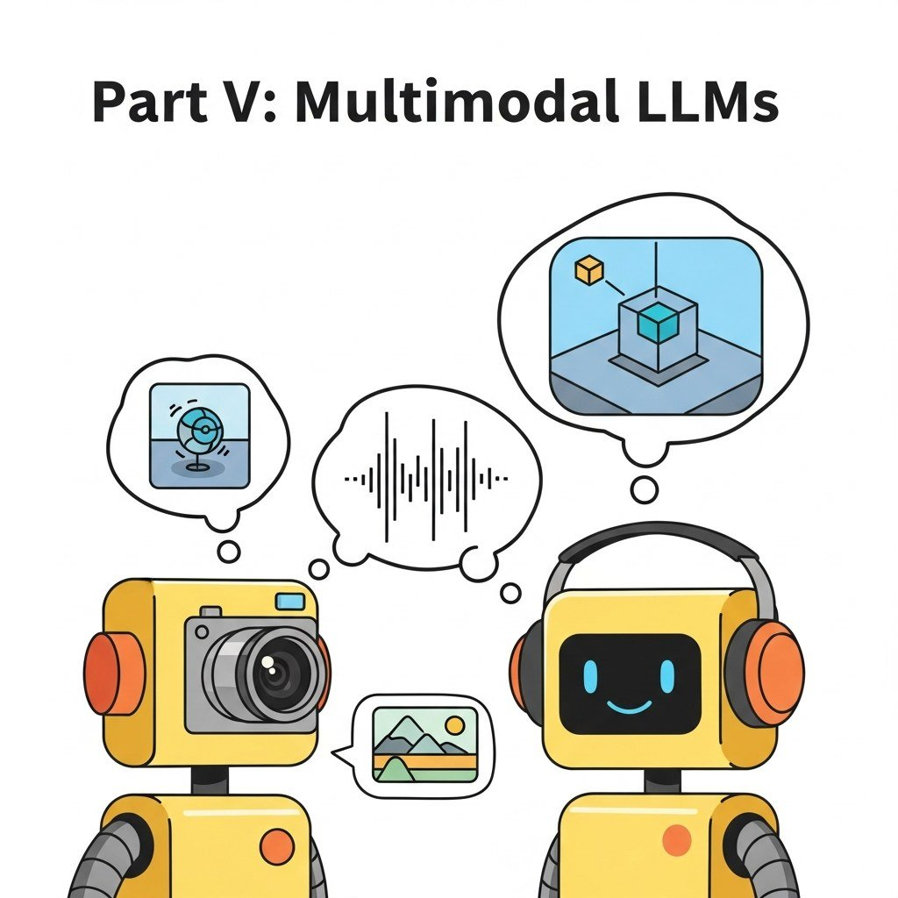

Part Overview
Vision-language and Omni models, image/video/audio generation, document understanding, 3D, embodied AI / VLA / robotics.
Big Picture
Vision-language and Omni models, image/video/audio generation, document understanding, 3D, embodied AI / VLA / robotics.
Chapters
Chapter 20 Audio, Music, and Video Generation
- 20.1 Text-to-Speech: VITS, Bark, and F5-TTS
- 20.2 Voice Cloning, Zero-Shot TTS, and Voice Conversion
- 20.3 Music Generation: MusicLM, MusicGen, Suno, and Udio
- 20.4 Audio Editing: Stems, Style Transfer, and Remixing
- 20.5 Speech Recognition for the Multimodal Stack
- 20.6 Video Diffusion Transformers (DiTs)
- 20.7 Leading Video Models: Sora, Veo, Runway, Kling, and Pika
- 20.8 Camera Control, Motion Control, and ControlNet for Video
- 20.9 Video Editing and Remixing
- 20.10 Long-Form and Cinematic Video Generation
Chapter 22 Vision-Language and Omni Models
- 22.1 ViT and Visual Tokenization
- 22.2 Contrastive Vision-Language: CLIP and SigLIP
- 22.3 Generative VLMs: LLaVA, BLIP-3, Qwen-VL
- 22.4 Frontier VLMs: GPT-4V, Gemini, Claude Vision
- 22.5 Evaluating Multimodal Reasoning: MMMU and Saturation
- 22.6 Pipeline vs Native Multimodal
- 22.7 Early Fusion vs Late Fusion
- 22.8 Any-to-Any Generation
- 22.9 Frontier Omni Models: GPT-4o, Gemini, Llama-4-Omni, Chameleon
Chapter 24 VLA Models and LLM-Powered Robotics
- 24.1 VLA Architecture in One Equation
- 24.2 OpenVLA-7B Reference Implementation
- 24.3 Physical Intelligence pi-0 / pi-0.5
- 24.4 RT-2-X & the Data-Scaling Story
- 24.5 Comparing VLA Models
- 24.6 VLA Limitations
- 24.7 SayCan: Grounding LLM Plans
- 24.8 Code-as-Policies
- 24.9 VoxPoser: Language as Spatial Cost Field
- 24.10 Multi-Robot Dispatch via Shared LLM
- 24.11 ROS 2 Integration
- 24.12 Comparing the Planners
- 24.13 Sim-to-Real Gap
What's Next?
This part begins with Chapter 20: Audio, Music, and Video Generation. Each chapter builds on the previous one, so we recommend reading Part V in order.